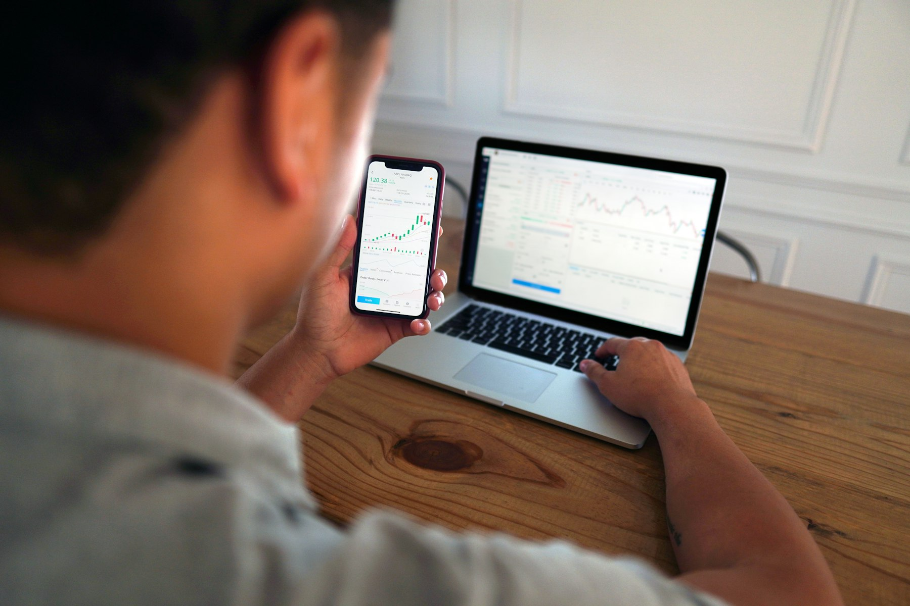

TL;DR
For the simplest automated investing, start with eToro or Betterment (US) / Scalable Capital (EU). Avoid Interactive Brokers for your first $500 due to complexity and potential monthly fees. Automation isn’t equal—check for hidden costs and minimums, especially EU currency conversions. Best for $100–$200 monthly: eToro CopyTrader or Betterment’s robo portfolios.
Quick Verdict: Which Trading App Should Most Beginners Start With?
If you want an automated start for less than $100, start with eToro (for both US and EU). For those seeking hands-off investing, Betterment (US) or Scalable Capital (EU) automates more, but limit your trade flexibility. Don’t overcomplicate it with Interactive Brokers until you need advanced automation or have $1,000+ to invest.
For example, if you’re automating $50 per month into broad ETFs, eToro’s simple CopyTrader feature is enough. You can literally copy a diversified investor’s trades in under 10 minutes with no coding, portfolio setup, or complex workflows.
If you want a robo-advisor that asks three questions, builds you a risk-matched portfolio, and auto-rebalances monthly, Betterment (US) or Scalable Capital (EU) deliver. But you give up manual tweaking and pay a modest annual fee.
Example Decision: If your main goal is simplicity—minimal choices, zero manual trades, and automatic rebalancing—start with a robo-advisor. If you want to learn by copying real traders or want more transparency about trades, give eToro a try. Wait to look at Interactive Brokers until you know how to filter stocks or want to build your own trade rules with APIs.
Who Each Option Is Actually For: Low-Budget, Set-and-Forget, and Hands-On Beginners
Beginner investors split into three main profiles: 1. Low-budget auto-investors: Typically younger, starting with $50–$200 per month. Need fee transparency and a simple on-ramp. Example: Sophia, age 24, wants to invest $100 monthly with almost no oversight and can’t lose 2% to hidden fees. 2. Set-and-forget automators: Often busy professionals or new savers who don’t plan to trade much. They want full automation, don’t care about picking stocks, and want a risk-appropriate ETF blend without managing it themselves. Example: Alex, age 38, auto-investing $300 monthly through Betterment, only logging in every few months. 3. Beginners who want to copy trades: Curious, learning, and want to see what others are doing but don’t yet know how to build a portfolio. eToro’s CopyTrader hits this niche. Example: Malik, age 20, follows three popular traders’ public moves with $250, learning as he goes.
Not every platform serves these groups equally well. What works for a high-volume trader is simply overkill if you’re automating tiny monthly steps or just want basic trade copying. Brokers like Interactive Brokers let you access full programming APIs, but setting up your first automated buy is like taking a calculus class before arithmetic. Pick based on actual need.
You might find our companion piece on beginner brokerage account mistakes a useful next read.
Where the Differences Start to Matter: Fees, Automation Limits, and Real Control
The most common beginner mistake? Assuming all automation is equal. In reality, each platform draws the line differently—on fees, minimums, and what gets automated. Here’s how three popular choices compare:
Before picking your app, look at these hands-on differences:
| Feature | eToro | Betterment | Interactive Brokers |
|---|---|---|---|
| Monthly Fee | $0 for basic, $5 for eToro Club | 0.25% annual (min $4/mo for balance under $20K) | $0 for IBKR Lite, $10/mo for Pro unless balance $100K+ |
| Minimum Investment | $10 | $10 | $0 technically, but complex features assume $1,000+ |
| Automation Type | CopyTrader (mirror real investors) | Robo-advisor (portfolio autobalance, no manual trade) | AutoInvest, APIs, all pro tools possible |
| Best For | Copying trades, social learning | Set-and-forget ETF automation | Coding custom logic, advanced control |
| Overkill For | DIY coders, high-frequency trading | Hands-on traders, frequent manual rebalancers | First-timers, low-budget, or those allergic to setup complexity |
Let’s put it in real numbers: If you start with $100 and want zero software fee drag, eToro is nearly free to start. Betterment takes just $0.25 per year per $100, a non-issue for most. Interactive Brokers’ Pro version will ding you a $10 monthly fee unless you have a $100,000 balance. The setup mistake is picking a pro tool and paying recurring fees long before you need advanced scheduling or custom ETF logic.
What this means: For anything under $500 per month or your first $1,000, overbuilt feature sets are simply a tradeoff of frustration for zero practical benefit.
A Real Setup Scenario: Your First 30 Days Automating With $200

Let’s walk through the exact steps a new user would take to go from $0 to $200 invested with automation—and see what friction points pop up. 1. Download your platform of choice (say, eToro) and create your account—it takes about 7 minutes if you have your ID ready. 2. Transfer $200 from your bank. It usually settles in 1–3 days (a mini-pitfall: EU users may wait up to a week for cross-border transfers). 3. Browse real traders and activate CopyTrader to mirror their accounts. Investing $100 in a diversified, low-turnover trader leaves the rest for experimenting or holding cash. 4. Set a recurring $50 monthly auto-deposit for ongoing growth.
The app prompts you for these steps, but some details are easier missed: Review copied traders’ 12-month volatility and check their past trade frequency before copying. Mistake: Copying someone with wild returns not matched to your risk tolerance.
Quick scenario for Betterment: After answering five onboarding questions, you’re assigned a recommended mix (say, 80% stocks, 20% bonds), and your $200 is auto-allocated with no more manual trades. Every month, the platform rebalances so you stay close to your initial 80/20 target.
But if you try this with Interactive Brokers, you get stuck at the onboarding wall: multiple KYC steps, funding verification, and manual portfolio setup with decision points about each ETF ticker and schedule. Unless you want to tinker or need Euro and USD accounts, skip the pain for now.
In practice, most beginners spend their first 30 days just figuring out fund transfers, searching for the right traders to copy, or understanding fee statements. Common mistake: Not checking commission rates on every trade or missing currency conversion fees for EU users.
Mistakes and Overkill Choices: Where Beginners Waste Time and Money
The line between a wise starter tool and a time-wasting mistake is thin. Beginners often chase features that sound powerful but require weeks of setup learning with no real benefit for first investments under $500.
A recurring error: Signing up for Interactive Brokers or similar pro platforms for their ‘auto-trader’ systems, thinking automation guarantees profits. In reality, setting up even a basic recurring buy is a four-step dance through account types, currency settings, and compliance screens.
For a new investor, the setup friction and cognitive load is a clear tradeoff—not worth it unless you want to program custom strategies.
Another mistake: Failing to check not just monthly fees, but hidden costs like forex conversion. Depositing in EUR and investing in US ETFs can cost 0.10–0.30% per conversion, wiping out the perceived savings from supposedly ‘zero commission’ platforms.
Timing tradeoff: Many beginners try to change platforms after the first month, thinking another app’s features will solve all problems. Instead, stick to one for your first 30 days—track gains, fees, and support response. Only then does switching make sense.
Edge case: If you try to automate a $50/month plan through a manual brokerage, you lose momentum—auto-rebalancing only works if the platform supports fractional ordering and low minimums. Missing this feature in your app is a mistake that undercuts time-in-market compounding.
Looking to avoid more common beginner mistakes? Check our guide on top pitfalls first-time investors make with automated tools.
Final Recommendation by User Type: Where to Start and Why to Upgrade
If you’re just starting out and investing less than $500, use eToro for copy trading or Betterment/Scalable Capital for automated ETFs and simple rebalancing.
Best for under $200/month: eToro (US/EU) for copying real people and simplicity; Betterment (US) or Scalable Capital (EU) for a pure set-and-forget robo-advisor experience. Both support recurring funding steps and deliver real automation with no coding.
Upgrade case: Once your account balance hits $5,000+ or you want detailed ETF picks, branch into Interactive Brokers for full automation choices, including programmatic rebalancing, tax-loss harvesting, and custom asset splits like allocating 60% to global stocks, 30% to US, and 10% to bonds.
Step-by-step upgrade scenario: 1. Start with eToro or Betterment and automate $100/month 2. Track your fee impact after 30 days—ideally under 0.3% of your total invested 3. When your account exceeds $5,000, review if platform flexibility or advanced tax tools become worth the Interactive Brokers’ setup pain 4. Shift only if your investment habit and dollar volume justify extra complexity
Decision: For most US and EU beginners, sticking to the starter platforms for your first 12 months is no mistake. Only switch when you feel their monthly automation or asset selection limits your plan.
FAQ
What should I look for in a stock trading app as a beginner?
Look for low or no monthly fees, an easy setup flow, true automation for recurring buys, and transparent commissions. Fractional share support, a well-designed beginner dashboard, and live support are valuable. Avoid advanced platforms unless you plan to trade actively or code custom strategies anytime soon.
Are there any free automated trading apps for beginners?
Yes. eToro offers free basic copy trading, and Interactive Brokers’ IBKR Lite tier does not charge a monthly fee for most basic features. Betterment has no upfront fees but does charge 0.25% annually. Always check for hidden costs, such as conversion fees for international stocks or funds.
How often should I check my automated investment account?
Monthly is enough for most beginners. Automation means you don’t need to micro-manage, but it’s crucial to review account statements monthly to spot missed trades, unexpected fees, or shifts in your automatic allocations. A quarterly funds check is also smart to make sure your allocations still fit your long-term target.
Can I switch between trading apps later?
Yes, but the process can be slow or involve transfer fees. Most US/EU brokers support partial or full transfers, but expect a week or two for the move and possible asset liquidation if holdings aren't transferable. Don't jump just for new features; switch only when your automation or asset needs outgrow your current platform.
This article is reviewed for practical usefulness and updated regularly when product features or costs change. Content is for informational and educational purposes only, not investment advice.
Choose faster
Use this article to narrow the field then compare your top options by price, setup friction, and upgrade risk.
Search more articles
Find related tools, workflows, and guides.
Photo credits
- Photo 2: Markus Winkler via Unsplash
- Photo 3: Prateek Katyal via Unsplash
- Photo 4: Joshua Mayo via Unsplash
- Photo 5: Marjan Grabowski via Unsplash
- Photo 6: Tim Mossholder via Unsplash